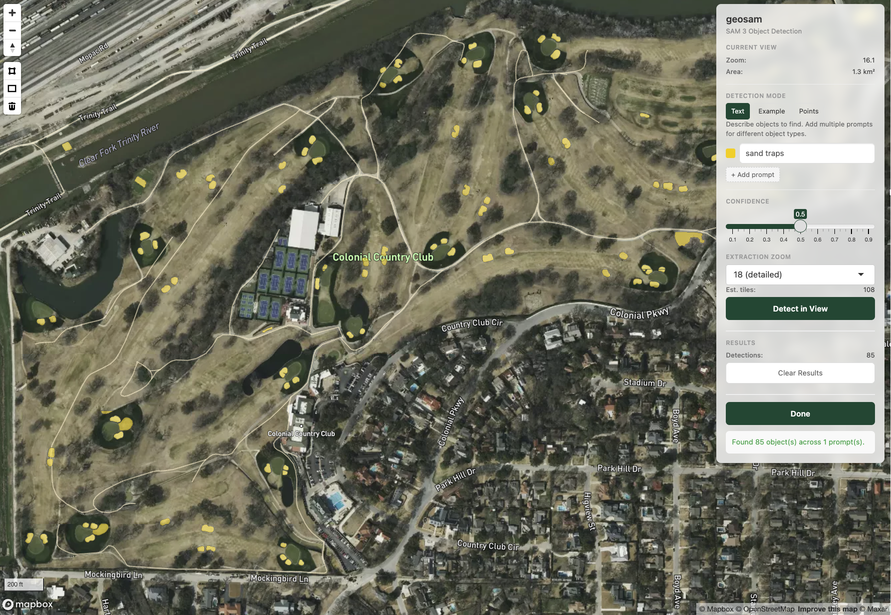
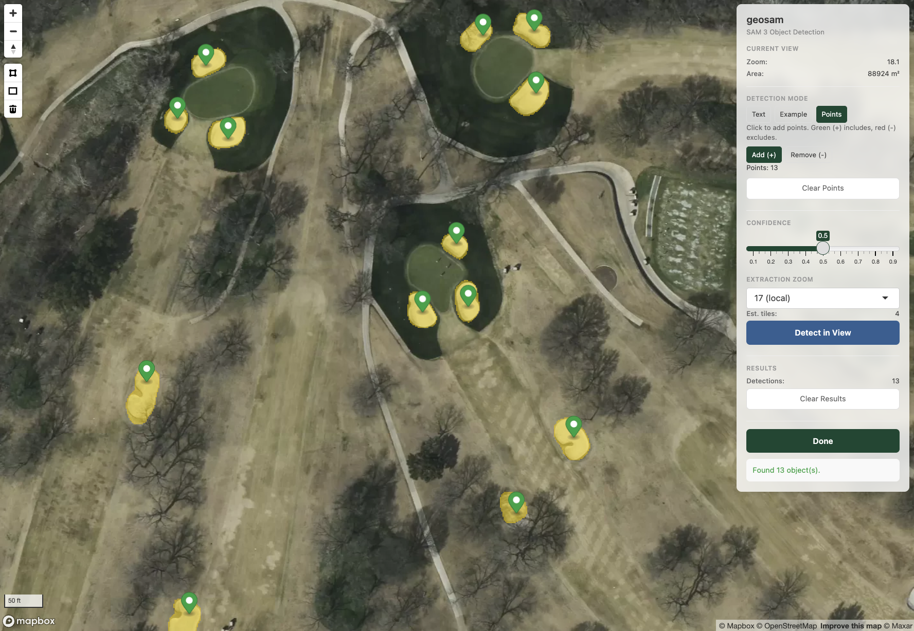

library(geosam)
result <- sam_explore(source = "mapbox")geosam includes interactive Shiny tools for exploring imagery and running detections. This vignette covers sam_explore(), the main interactive interface for satellite imagery.
Exploring satellite imagery
sam_explore() opens an interactive map where you can navigate, detect objects, and export results:
The interface lets you:
- Navigate to any location using the map or search
- Text prompts: Type a description to detect objects (e.g., “swimming pool”)
- Exemplar prompts: Draw a shape around an example object to find similar ones
- Point prompts: Click on the map to indicate object locations
- Adjust threshold: Use the slider to filter by confidence
- Export: Return extracted results to your R session
Let’s try this out. We’ll focus on the golf course at Colonial Country Club in Fort Worth. To initialize the map view at a specific location with sam_explore(), specify a center and zoom. You can also supply a bounding box or sf object to bbox to initialize the view there.
sam_result <- sam_explore(
center = c(-97.373, 32.719),
zoom = 16
)
The explorer defaults to source = "mapbox"; use "esri" or "maptiler" for Esri World Imagery and MapTiler Satellite, respectively.
Let’s try a first detection with a text prompt. The explorer will search the visible area in the viewport. Set the confidence threshold to govern what you return, and the extraction zoom (16 through 18) to specify the level of detail for the underlying imagery. Choosing 16 will make the process run faster, and choosing 18 will give you the most accuracy.

Our search for “sand traps” did a pretty good job! However, we do note some false positives, such as a sand trap found across the Trinity River that we know is incorrect. Given that we extracted over a large area with a high zoom (18), we also notice a few artifacts of the tiling process geosam uses internally (which can be cleaned up with sam_merge_edges()). In turn, it may make more sense to refine our search.
The “Example” mode allows us to use exemplar-based detection where we draw a shape around the object type we want, and tell SAM3 to extract everything in the image that looks like that shape. Vertex-based polygon drawing and rectangles are supported using mapgl’s draw control.

In this example, we zoomed into a section of the golf course and drew a shape around a sand trap. We did a good job overall! there is one sand trap in the view that we missed - which as we can see is partially obscured by trees in the lower part of the view.
If you want to capture specific objects from the view, try the “Points” example. This will allow you to interactively click on locations on your map to tell SAM3 to extract objects at those locations. Let’s give this a try.

In this example, I was able to manually locate sand traps, including the trap obscured by the tree; this helped SAM3 find it.
When you are finished with your interactive session, click the Done button. This will return your extraction result back to your R session, named as the object you assigned the sam_explore() result to.
sam_result |> sam_as_sf()Simple feature collection with 13 features and 3 fields
Geometry type: POLYGON
Dimension: XY
Bounding box: xmin: -97.37039 ymin: 32.72013 xmax: -97.36845 ymax: 32.72234
Geodetic CRS: WGS 84
First 10 features:
score mask_id geometry area_m2
1 0.7930747 1 POLYGON ((-97.36881 32.7206... 139.7892
2 0.9364986 2 POLYGON ((-97.36856 32.7209... 231.4368
3 0.9188104 3 POLYGON ((-97.36898 32.7214... 172.9535
4 0.9192324 4 POLYGON ((-97.36919 32.7213... 166.5346
5 0.9121889 5 POLYGON ((-97.36904 32.7215... 107.6948
6 0.9012610 6 POLYGON ((-97.37033 32.7210... 277.7954
7 0.9021404 7 POLYGON ((-97.37017 32.7202... 235.3594
8 0.9207366 8 POLYGON ((-97.36995 32.7219... 202.5517
9 0.8797024 9 POLYGON ((-97.3702 32.72202... 109.8344
10 0.9075627 10 POLYGON ((-97.37001 32.7222... 154.4100